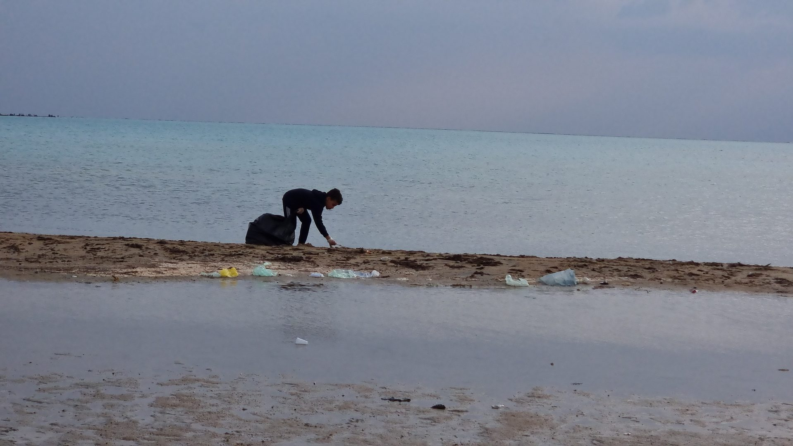
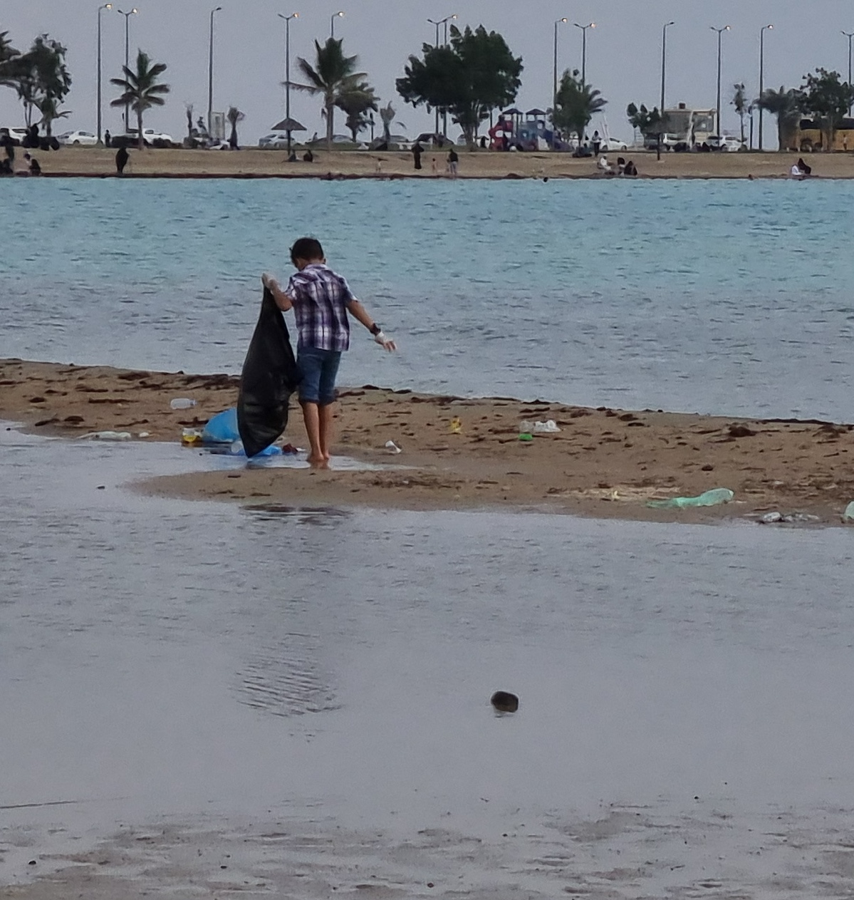
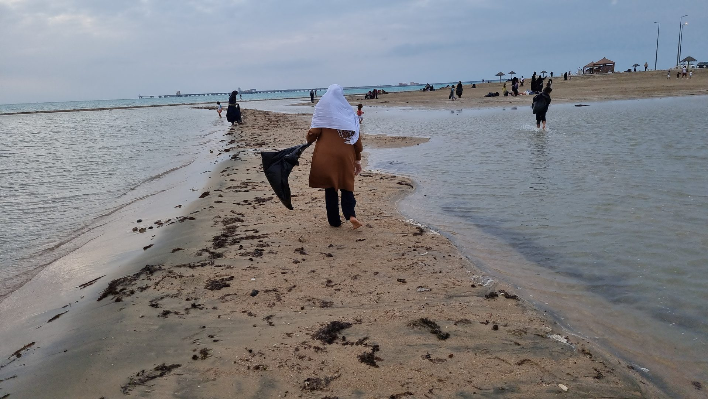

Proof of Concept · Environment
Organized end-to-end by one student — from rallying the community, coordinating logistics, to actually showing up and doing it.




Plastic pollution and waste on public beaches is one of those problems that everyone notices and almost nobody does anything about. It's easy to walk past. Easy to assume someone else will take care of it. Easy to feel like your contribution wouldn't matter anyway.
This student decided to test that assumption.
Organizing a cleanup sounds simple until you try to do it. The student discovered quickly that "let's clean the beach" and actually cleaning the beach are very different things. You need a date, a location, supplies, people, communication, coordination, and someone willing to lead when things don't go smoothly.
The student handled all of it. Chose the site, set the date, sourced supplies, spread the word to recruit community volunteers, and built a plan for how the cleanup would run. Adults were there as support — not as organizers.
The day came. People showed up. Work got done. A beach that was covered in waste was cleaner at the end than at the start. The satisfaction of that — earned, not given — lasted long after.
Not everything went to plan. It never does. But watching the student handle the unexpected — redirect, problem-solve, keep things moving — was as valuable as any lesson that could have been taught in a room.
This project is proof that one kid can organize a real community event with real impact. The beach is cleaner. That happened because the student decided it should be and did something about it.
The deeper lesson is about agency. Not "someone should clean this beach" but "I will clean this beach." That shift — from observer to actor — is the entire point of Change Makers.
Want your child to do something like this?
Whatever problem your child cares about — Change Makers gives them the framework to actually do something about it.
Apply for Summer 2026 →